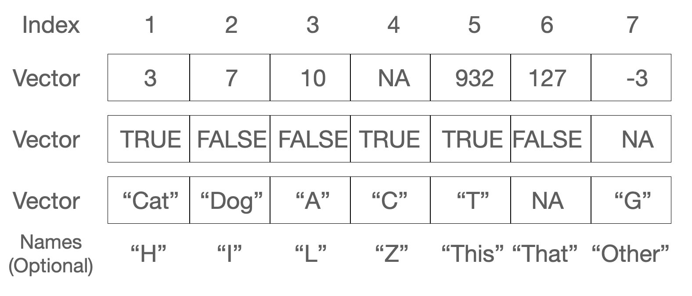

gene_count <- 1
gene_count[1] 1length(gene_count)[1] 1June 1, 2024
June 1, 2026
Suppose you’ve just measured the expression of one gene across a dozen samples, or jotted down the ages of every patient in a study, or listed the gene names you want to pull out of a results table. Each of those is the same shape: a single, ordered run of values of one kind. R has a container built exactly for that shape, and it is the workhorse you’ll reach for more than any other. It’s called a vector.
Almost everything in R is built on vectors. A column of a data frame is a vector. The output of most calculations is a vector. Even a single number, as you’ll see in a moment, is just a vector of length one. So getting comfortable here pays off everywhere downstream. Let’s build that comfort.
c(), the colon operator :, and seq().> and ==.paste(), nchar(), substr(), and grep().NA).A vector is a one-dimensional, ordered collection of elements that are all the same type. That last part matters: every value in a vector is numeric, or every value is text, or every value is logical — never a mix. Figure 7.1 shows three vectors side by side: a numeric one, a logical one, and a character one. Notice that each element has a position (an index) and can optionally carry a name.

Here’s the first surprise. In R, even a lone value is a vector — one of length 1:
We assigned the value 1 to a variable named gene_count. Typing gene_count by itself is an expression: it returns whatever is stored there. The length() function reports how many elements an object holds — here, just one. R gives you many ways to interrogate an object, and length() is one of the friendliest.
A vector can hold numbers, text (character data), or logical values (TRUE and FALSE), or other “atomic” types from Table 7.1. What it cannot do is hold a mix of types. When you need a grab-bag of different types in one container, R offers a different structure, the list, which you’ll meet in a later chapter.
| Data type | Stores |
|---|---|
| numeric | floating point numbers |
| integer | integers |
| complex | complex numbers |
| factor | categorical data |
| character | strings |
| logical | TRUE or FALSE |
| NA | missing |
| NULL | empty |
| function | function type |
If you try to mix types, R doesn’t error — it quietly coerces everything to a single type that can hold all the values. Watch what happens when a logical meets a string: the TRUE becomes the text "TRUE", quotes and all. Keep this in the back of your mind; a column that “looks numeric” but secretly contains one stray word will arrive as character, and your math will fail in confusing ways.
The most direct way to build a vector is c(), short for combine. Character values go in matching quotes — single or double, your choice — and R always displays them back with double quotes.
[1] "BRCA1" "TP53" [1] 1 3 4 5 1 2[1] 11234100.00 78234.13[1] TRUE FALSE TRUE TRUE[1] "TRUE" "hello"That last line is the coercion we just warned about: TRUE came back as "TRUE".
When you want a regular run of integers, the colon operator : is the quickest tool. It counts from the first number to the second, in either direction.
[1] 1 2 3 4 5 6 7 8 9 10 [1] 10 9 8 7 6 5 4 3 2 1For sequences with a custom step size, seq() is more flexible. Here we step by 0.3 instead of 1:
[1] 1.0 1.3 1.6 1.9 2.2 2.5 2.8 3.1 3.4 3.7 4.0And you can build a new vector by gluing existing ones together with c():
Here is where vectors earn their keep. Arithmetic on a vector happens element-by-element. Add 2 to a vector and R adds 2 to every element, handing back a new vector of the same length. You never have to write a loop.
Think of how often that’s what you want: shift every measurement, scale every value, take the log of a whole column. One short line does it.
When two vectors are involved, the rules depend on their lengths. If they’re the same length, R simply pairs up matching elements and operates on each pair:
If the lengths differ but the longer is a multiple of the shorter, R reuses the shorter vector from the start as many times as needed. Here the two-element vector c(1, 2) is repeated five times to line up with the ten-element vector:
If the longer length is not a clean multiple of the shorter, R still recycles the short vector — but warns you, because this is usually a sign of a mistake:
Warning in expression * triple: longer object length is not a multiple of
shorter object length [1] 2 6 12 8 15 24 14 24 36 20The usual arithmetic is all here — multiplication (*), addition (+), subtraction (-), division (/), exponentiation (^) — and because each acts on whole vectors, we call these operations vectorized.
When you combine vectors of different lengths, R silently stretches the shorter one to match. If that wasn’t your intent, you’ll get plausible-looking but wrong numbers and no error. The “not a multiple” case at least prints a warning; the “clean multiple” case prints nothing at all. When two vectors should be the same length, check that they are — length(x) is your friend.
A logical vector holds only TRUE and FALSE (all uppercase, no quotes). These turn up constantly, because asking a yes/no question of a whole vector returns one.
[1] TRUE FALSE TRUE[1] TRUE[1] 1 0 1The comparison operators <, >, ==, >=, <=, and != each take a vector and return a logical vector — one TRUE/FALSE per element. This is the engine behind filtering data.
[1] FALSE FALSE FALSE FALSE FALSE TRUE TRUE TRUE TRUE TRUE [1] TRUE TRUE TRUE TRUE TRUE FALSE FALSE FALSE FALSE FALSE [1] TRUE TRUE TRUE TRUE FALSE TRUE TRUE TRUE TRUE TRUE [1] FALSE FALSE FALSE FALSE TRUE FALSE FALSE FALSE FALSE FALSEYou can save that logical result in a variable to reuse later:
= assigns, == compares
A single = is assignment; a double == is a test for equality. Writing x = 5 changes x, while x == 5 asks whether x equals 5. Mixing them up is one of the most common beginner errors. In this book we always assign with <-, which keeps the two jobs visually distinct.
An index lets you reach into a vector and pull out one element or a handful. R uses square brackets, [ and ], for this.
Unlike many programming languages that start counting at 0, R starts at 1. The first element of x is x[1], the second is x[2], and so on. If you’ve programmed before, this is a frequent source of off-by-one surprises.
You can index with a vector of positions to grab several elements at once:
Now combine indexing with logical vectors, and you have one of the most powerful patterns in all of R. Here we generate ten random values, flag the ones above 0.25, and keep only those:
[1] 5[1] 1.5952808 0.3295078 0.4874291 0.7383247 0.5757814[1] -0.6264538 0.1836433 -0.8356286 -0.8204684 -0.3053884[1] 1.5952808 0.3295078 0.4874291 0.7383247 0.5757814That last line — subset a vector by a condition on itself — is something you’ll write hundreds of times. Read it as “the measurements where measurements exceed 0.25.”
Elements can carry names as well as positions, which often makes code far more readable. Imagine a small set of patient ages keyed by patient ID. You attach names with names():
p01 p02 p03
54 39 71 Once a vector is named, you can access elements by name instead of remembering their position:
p02
39 p01 p02 p03
55 39 71 Names are just labels riding alongside the values; the vector is still a plain numeric vector underneath.
Text data — gene names, sample labels, file paths — lives in character vectors, and R has a toolkit for manipulating them. To glue strings together, use paste():
[1] "BRCA 1"[1] "BRCA_1"[1] "BRCA1" [1] "sample 1" "control 2" "sample 3" "control 4" "sample 5"
[6] "control 6" "sample 7" "control 8" "sample 9" "control 10" [1] "sample_1" "control_2" "sample_3" "control_4" "sample_5"
[6] "control_6" "sample_7" "control_8" "sample_9" "control_10"Notice paste() is vectorized too: in the last two lines it recycles the two-element vector across the ten numbers.
To count characters in each string, use nchar():
To pull a piece out of a string by position, use substr():
To find-and-replace within a string, use sub():
And to find which strings in a vector contain a pattern, use grep() — the name comes from “globally search a regular expression and print.” By default it returns the matching positions; add value = TRUE to get the matching strings themselves:
[1] 1 2[1] "BRCA1" "BRCA2"A close relative, grepl(), answers the yes/no version of that question — you’ll meet it in the exercises.
NAReal data has holes: an assay that failed, a measurement never taken. R marks such gaps with the special value NA (Not Available). Crucially, NA is still an element — it occupies a position and counts toward length().
The function is.na() tests each element and returns a logical vector. Let’s poke a hole in x by setting its second element to NA:
The length hasn’t changed — x still has five slots — but one of them is now flagged as missing:
To drop the missing values, lean on the indexing pattern from earlier. is.na(x) gives a logical vector that is TRUE at the gaps; the ! operator flips it to TRUE everywhere there’s a real value; indexing with that keeps only the real values:
Each solution names the key idea and a one-line why, because the reasoning transfers further than the answer.
Create a numeric vector called temperatures containing the values 72, 75, 78, 81, 76, and 73.
Create a character vector called days containing “Monday”, “Tuesday”, “Wednesday”, “Thursday”, “Friday”, “Saturday”, and “Sunday”.
Calculate the average of temperatures and store it in average_temperature.
Build a named vector weekly_temperatures whose names are the (first six) days and whose values are the six temperatures.
Create a numeric vector ages with the values 25, 30, 35, 40, 45, 50, 55, and 60.
Create a logical vector is_adult that is TRUE where ages is at least 18.
Calculate both the sum and the product of ages.
Extract the ages greater than or equal to 40 into a vector called older_ages.
The grepl() function (read ?grepl) returns a logical vector — TRUE where a pattern is found, FALSE where it isn’t. Using the vector below, return a logical vector that is TRUE for each entry containing the letter "a".
From measurements <- rnorm(20), count how many values are negative without writing a loop.
You can now create and wield the container R uses for almost everything:
c(), the colon operator :, and seq() — and recall that even a single value is a length-1 vector, all of one type.>, ==, !=, and friends to produce logical vectors.paste(), nchar(), substr(), sub(), and grep()/grepl().NA and is.na(), dropping them via x[!is.na(x)].The logical-indexing pattern — ask a yes/no question of a vector, then use the answer to subset it — is the single most useful idea here. It reappears every time you filter data, so the practice you put in now pays off in every chapter to come.